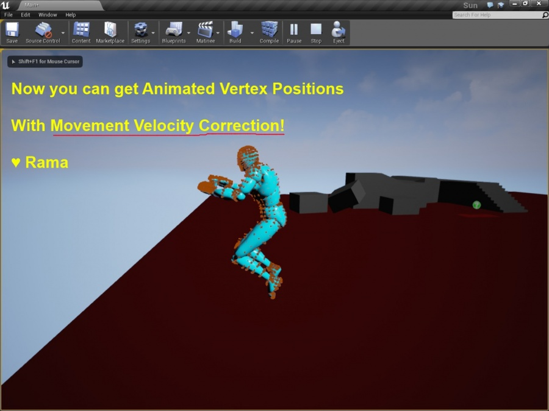

Animated Vertex Positions of Character Mesh, How To Obtain Them

Overview
Author: ( )
Dear Community,
Here is the C++ code that you can use to obtain animated vertex positions!
This is the code from my free Victory BP Library plugin BP node that obtains velocity-corrected animated vertex positions for Pawns and Characters!
bool UVictoryBPFunctionLibrary::AnimatedVertex__GetAnimatedVertexLocations(
USkeletalMeshComponent* Mesh,
TArray<FVector>& Locations,
bool PerformPawnVelocityCorrection
){
if(!Mesh || !Mesh->SkeletalMesh)
{
return false;
}
//~~~~~~~~~~~~~
Locations.Empty();
//~~~~~~~~~~~~~
Mesh->ComputeSkinnedPositions(Locations);
FTransform ToWorld = Mesh->GetComponentTransform();
FVector WorldLocation = ToWorld.GetLocation();
//Pawn Velocity Correction
UPawnMovementComponent* MovementComp = nullptr;
if(PerformPawnVelocityCorrection)
{
APawn* Pawn = Cast<APawn>(Mesh->GetOwner());
MovementComp = (Pawn) ? Pawn->GetMovementComponent() : NULL;
}
bool DoVelocityCorrection = PerformPawnVelocityCorrection && MovementComp;
//Pawn Velocity Correction
for(FVector& EachVertex : Locations)
{
EachVertex = WorldLocation + ToWorld.TransformVector(EachVertex);
if(DoVelocityCorrection)
{
EachVertex += MovementComp->Velocity * FApp::GetDeltaTime();
}
}
return true;
}
Transforming Vertices To World Space
If you read the API notes on USkinnedMeshComponent::ComputeSkinnedPositions you will see that the vertex positions are obtained in component space.
In order to provide world space postions I have to transform each vertex by the world transform of the skeletal mesh component:
FTransform ToWorld = Mesh->GetComponentTransform();
FVector WorldLocation = ToWorld.GetLocation();
EachVertex = WorldLocation + ToWorld.TransformVector(Each);
Velocity Correction
The animated vertex positions obtained by the skeletal mesh are obtained on the CPU thread before the character movement update has occurred for characters, and thus vertices always lag behind if you just use USkinnedMeshComponent::ComputeSkinnedPositions.
I use this code below to add in the tick update from the pawn or character movement component so that animated vertex positions are accurate for moving characters!
if(DoVelocityCorrection)
{
EachVertex += MovementComp->Velocity * FApp::GetDeltaTime();
}
Conclusion
Enjoy!
( )